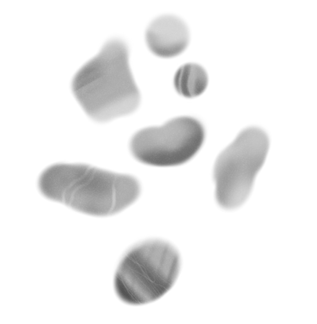

Les cailloux se forment à partir de roche et d’accident naturel. À l’intérieur de ces roches s’y cachent des fissures invisibles, Les infiltrations d’eaux, les racines des plantes, le gel, etc. les font éclater en morceaux anguleux.
Petit à petit, l’érosion use les arêtes qui s’émoussent et on obtient des cailloux. Ils sont ensuite déplacés, chahutés, avant d’arriver à nos pieds, polis.
À vous de façonner vos propres cailloux pour en doter le monde -------------------------->